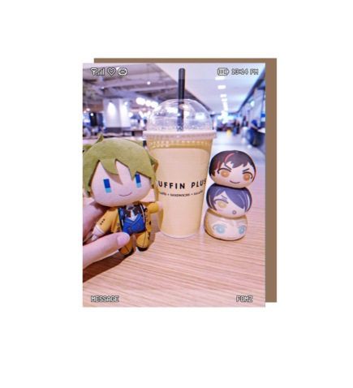
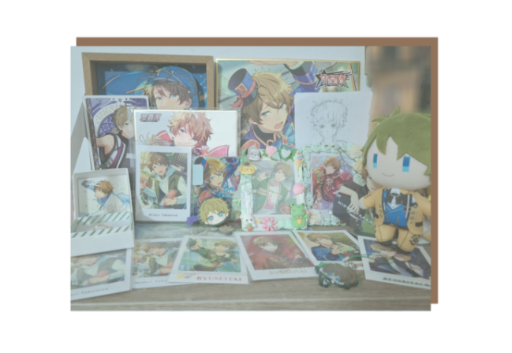

L’amour pour un personnage !
Votre collection peut être composée d’une personne réelle ou d’un personnage fictif comme mentionner.
Pour ma part, je suis passionnée par ce personnage depuis début septembre 2023 !
Ma collection ne cesse de s’agrandir chaque jour, et j’y tiens énormément.
L’admiration que l’on porte à ce que l’on aime ne doit jamais être sous-estimée, même lorsque la collection reste modeste,
car l’affection que vous lui portez se reflète toujours dans ce que vous choisissez et appréciez.
vous pouvez le constater, j’ai tendance à emmener des peluches partout où je vais.